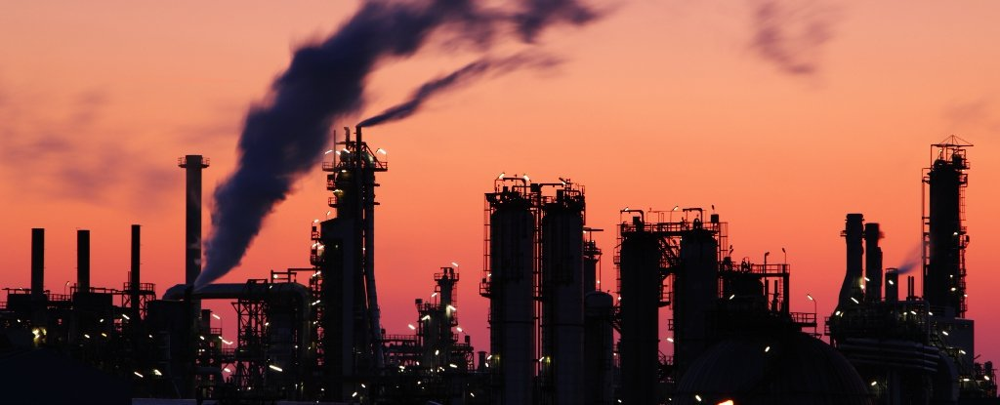

Home
Introduction
Fossil Fules
Clearing Forest
Fertilization
Global Warming
Conclusion
Humans are making global warming and climate change move faster by burning fossil fuels. Fossil fuel is a natural fuel such as coal or gas, formed in the geological past from the remains of living organisms. Burning these fossil fuels such as coal or petroleum sends carbon dioxide, methane and other greenhouse gases into the atmosphere. Gradually, temperatures climb. Carbon dioxide has caused most of the warming, science tells us, it can measured. For 800,000 years, natural amounts of carbon dioxide range from 180 to 3000 parts per million (ppm). Today’s levels are around 400 ppm- up 40 percent since the Industrial Revolution began in the mid 18th century, when the level was 280 ppm according to NASA. People know this extra carbon dioxide comes mainly from burning coal and oil because of the chemical composition of the gas. But a little carbon dioxide is good because without it trees, and other plants would die, resulting in us dying too. Another reason is the carbon emissions that cars leave behind. A way to help is use fuel-efficient vehicles. They use less gas to travel the same distance as their less efficient counterparts. When burning less fuel, it generates fewer emissions. When emissions go down, the pace of global warming slows. Another reason for climate change is mining. The mining sector is extrem ely energy intensive and one of the major emitters of greenhouse gases. According to Australia’s most recent National Greenhouse Inventory for 2013, the industry is responsible for 11.6 percent of Australia’s direct greenhouse gas emissions. Yes, they need to mine to get water and to get raw materials, but the mining industry should do it while using renewable energy. While the impact of methane emissions can be considerably reduced through flaring a number of operations exist where an underground mine and coal seam gas powered electricity generation plant have been located adjacent to each other so that captured methane can be used as a fuel source.
